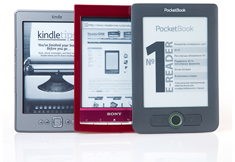
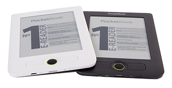
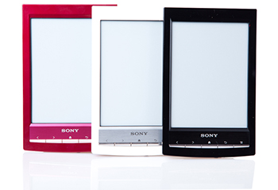
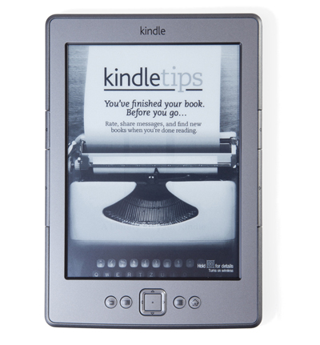

Немного об электронных ридерах


Электронные книги (англ. Electronic books или e-books) представляют собой компактные специализированные устройства для воспроизведения цифровых файлов, преимущественно текстовых. Файлы (то есть цифровые версии бумажных книг) тоже могут именоваться электронными книгами. Чтобы избежать этой путаницы, можно использовать англоязычные понятия «ридер» для обозначения устройства, и «контент» для наименования их содержимого, то есть цифровых книг, журналов и документов. В русском языке эти термины давно прижились и активно используются. На ридеры можно загружать любой контент (а не только с сайта-производителя читалки как ошибочно думают некоторые пользователи) со своего компьютера, используя USB-кабель, в форматах, поддерживаемых вашим ридером.
История появления
Прототипы современных экранов для электронных книг увидели свет в 1970-х годах, когда Ник Шеридон из Исследовательского Центра компании Xerox представил разработанную им технологию электронной бумаги Gyricon. В 1997 году эту технологию усовершенствовал Джозеф Якобсон, профессор Массачусетского Технологического Института. Он же стал основателем компании E-Ink, которая сегодня является крупнейшим поставщиков экранов для производителей электронных ридеров. Рынок электронных книг переживает бурный рост с 2007 года, когда появились модели Sony Reader PRS-500 и Amazon Kindle. К 2012 году ажиотажный спрос на электронные читалки привел к тому, что среди читающих книги с мобильных устройств, ридеры с экранами на электронных чернилах стали так же популярны, как смартфоны и планшетные компьютеры, оснащенные TFT-дисплеями.
Критерии выбора
Для начала определитесь с требованиями к своей будущей электронной
книге. Необходимо решить, какие из перечисленных параметров вам нужны:
-
Экран на электронных чернилах E-ink;
-
Длительная работа на одной зарядке аккумулятора;
-
Многофункциональность;
-
Большой экран;
-
Малый размер и вес;
-
Сенсорное управление;
-
Мультиформатность;
-
Русификация интерфейса;
-
Большой объем внутренней памяти;
-
Поддержка флеш-карт памяти;
-
Наличие WiFi/3G-модуля;
-
Удобство выхода в интернет;
-
Встроенные словари;
-
Музыкальный плеер;
-
Низкая цена.
В любом случае придётся делать выбор в пользу тех или иных
характеристик. Ридера, оснащенного всеми преимуществами, пока не
существует. Например, низкий вес никак не может сочетаться с большим
экраном. Ридеры с экранами на основе технологии E-ink, естественно,
обладают меньшим функционалом. Наличие сенсорного экрана неизбежно
увеличивает стоимость устройства. Поэтому придется решать, что важнее.
Но пожалуй, самое главное - определиться типом и размером экрана.
Разновидности экранов
Чаще всего электронной книгой называют устройство с экраном на
электронных чернилах от американской корпорации E-ink. Конкурентом E-ink
является компания SiPix, продвигающая свою одноименную технологию
цифровой бумаги, подложка которой заметно серее, зато текст, напротив,
отличается большей контрастностью и четкостью. Дисплеи E-ink более
популярны и используются большинством производителей-лидеров рынка.
Экран является наиболее дорогостоящей и самой важной деталью электронных
книг. Электронные чернила формируют изображение в отраженном свете, как
обычная бумага, а это значит, дисплей не нуждается в подсветке. Таким
образом, даже долгое чтение не утомляет глаза пользователя.
Принципиально иная конструкция дисплея в сравнении с цветными
TFT-экранами, в частности, выражающаяся в более низкой скорости
обновления изображения, не позволяет просматривать видео, играть в игры
или с комфортом просматривать веб-сайты. Необходимость качественного
воспроизведения текста оттесняет на второй план различные дополнительные
функции этих устройств. Электронные ридеры являются
узкоспециализированными девайсами, на которых приоритет отдан чтению, и
другие функции так или иначе представлены в усеченном виде и пользование
ими не слишком удобно. Преимущества же этого типа экрана заключаются не
только в безопасности для глаз, но и в длительной продолжительности
работы на одной зарядке аккумулятора. Ридер расходует заряд батареи
фактически только при перелистывании страниц в те моменты, когда вы
видите перемигивание черным цветом. Увеличить расход может только
использование WiFi/3G-модуля и музыкальный плеер. На одной зарядке
читалка с экраном E-ink способна проработать 3-4 недели (!).
Кроме ридеров с экранами E-ink, в свое время были очень распространены
устройства с TFT-дисплеями, именуемые медиаридерами. Устройства
подобного класса представлены, например, моделями производителей Pocketbook и Digma.
Они программно приспособлены для чтения, но также предлагают различные
мультимедийные преимущества, свойственные планшетным компьютерам
(просмотр видео, наличие камеры, удобный выход в интернет). Однако
благодаря тому, что планшетные компьютеры стремительно дешевеют и
становятся доступными более широкому кругу пользователей, именно они, а
не медиаридеры теперь являются основными конкурентами читалок на
электронных чернилах. Большинство пользователей соглашаются с тем, что
долгое чтение с цветного экрана утомительно, но для тех, кто читает мало
и хочет приобрести более функциональное устройство, планшетные
компьютеры выступают достойной альтернативой. Компания Samsung, один из
ведущих производителей планшетников, представила разновидности
популярной модели Galaxy
с диагоналями 7 и 7,7 дюйма, которые сопоставимы с читалками по
размеру, но предлагают несравнимо больший функционал. В плюсах
планшетных компьютеров - наличие подсветки экрана (можно читать в
темноте), удобный выход в интернет, возможность просмотра видео,
поддержка работы в 3G-сетях. Минусы: менее комфортный для глаз экран,
невозможность чтения при ярком солнечном цвете и непродолжительное время
работы на одной зарядке батареи (максимум 8-10 часов).
Выбор размера экрана
Перед покупкой электронной книги подумайте, литературу какого содержания
вы планируете читать на этом устройстве. От этого напрямую зависит то,
файлы каких форматов должна воспроизводить ваша будущая электронная
книга, и какая диагональ экрана вам нужна. Самые распространенные
форматы электронных книг - это FB2, EPUB и MOBI. О том, что они
представляют собой и чем отличаются друг от друга, мы расскажем позже.
Пока заметим, что именно в этих форматах представлена литература в
электронных библиотеках в интернете. Сейчас в них без проблем можно
найти практически любую книгу: от классики до современной бульварной
прозы. Если вы планируете читать художественную литературу и будете
носить ридер с собой, чтобы читать, к примеру, в транспорте, вам
подойдет читалка с 6-дюймовым дисплеем.
Это стандартный размер диагонали экрана электронных ридеров. Он
представляет собой своеобразный компромисс между компактными габаритами
устройства и удобоваримым количеством текста, которое помещается на
экране такого размера. Все самые популярные на рынке ридеры оснащены
экраном в 6 дюймов. Бывают читалки с дисплеями меньше - 5 дюймов, ими, в
частности, оснащен Pocketbook 360 plus,
представленный в нашем интернет-магазине. Эта модель - сверхкомпактная и
подойдет тем, кто хочет выбрать самый минимальный размер.
После 6-дюймового размера экрана сразу следует 10-дюймовая диагональ, а
точнее 9,7-дюймовая. Ридеры с подобными экранами предназначены для тех,
кто планирует читать специальную литературу (инструкции, технические
книги и учебники, тексты с многочисленными иллюстрациями), а также
газеты и журналы. Подобный контент чаще всего представлен в форматах PDF
или DJVU. В этом случае размер экрана приблизительно соответствует
формату такой книги или журнала. Ведь необходимо, чтобы при уменьшении
страницы до размера экрана текст оставался читаемым. Экран с
9,7-дюймовой диагональю для этих целей подходит идеально, хотя при этом
увеличивает физический размер устройства. Такие ридеры чаще покупают для
использования в домашних условиях. Кроме того, их предпочитают люди
старшего возраста, которым удобнее пользоваться ридером большого размера
(есть возможность максимально увеличить шрифт, но при этом уместить на
экране приемлемое количество текста). 9,7-дюймовые модели имеют в своих
линейках производители Pocketbook, Onyx и Amazon.
Тачскрин
Сенсорный экран на электронной книге позволяет минимизировать количество
кнопок на корпусе, и делает управление устройством более эргономичным.
Модели Pocketbook 612 и 912, а также все ридеры Onyx
с 9,7-дюймовыми дисплеями оснащаются индукционным сенсорным экраном. В
комплекте к ним идет стилус, сенсорное управление осуществляется только с
его помощью. Пальцем управлять этими ридерами не получится, зато стилус
более удобен при работе со словарями и в браузере. Преимущество этих
моделей в том, что ими можно так же управлять и кнопками, а значит
пользователь может выбирать из двух способов управления. На рынке
ридеров с экраном на основе технологии E-ink более популярны модели с
инфракрасными сенсорными экранами (или дисплеями с инфракрасной рамкой),
и поддержкой функции мультитач. В случае с ними пользователь управляет
ридером с помощью пальцев жестами, характерными для работы с планшетными
компьютерами и мобильными телефонами. Именно такими экранами оснащены
модели Sony PRS-T1, Pocketbook Touch, Kindle Touch, Nook Simple Touch и Onyx i62M.
Покупать ридер с сенсорными экраном или без - личный выбор каждого. На
наш взгляд, главное в электронной книге не наличие сенсорного экрана или
его отсутствие, а продуманная эргономика управления. Например, Amazon Kindle 4
совершенно не страдает от отсутствия тачскрина - он идеально
управляется немногочисленными кнопками. А модель Sony PRS-T1, напротив,
совершенно невозможно представить без сенсора. Конечно, желательно
опробовать электронную книгу перед покупкой. В любом случае выбирайте
тот вариант, который удобен лично вам.
Другие параметры экранов

Большинство 6-дюймовых читалок с экранами E-ink оснащены разрешением
600х800. Не так давно на рынке появились ридеры с более высоким
разрешением 758х1024. Они позиционируются как «ридеры с высоким
разрешением экрана». Подобные HD-ридеры — это модели Onyx i62M Pligrim, Duncun и Captain Nemo.
Вы также можете обнаружить на рынке множество подобных устройств от
других брендов, чаще всего китайских. Есть мнение, что заявленное
преимущество - не более чем маркетинговый ход производителей и высокое
разрешение реально не повышает качество изображения. В пользу этого
говорит и тот факт, что производители-лидеры мирового рынка читалок
моделей с HD-экранами пока не выпускали.
Если перечисленные моменты принципиально важны для вас - имеет смысл сравнить модели от разных производителей «вживую».
Вес и габариты

Ведущие производители диктуют моду на уменьшение габаритов моделей. Даже
6-дюймовые ридеры без проблем помещаются не только в портфели и сумки,
но даже во многие карманы одежды. Тем же, кто, напротив, хочет ридер
побольше - советуем обратить внимание на «заслуженных ветеранов»
Pocketbook 612 и Kindle 3.
Форматы и конвертация
Электронный контент ридеров - это специально сверстанные под их экраны
текстовые файлы, содержащие форматирование, тэги, информацию об авторе и
издании, а также иллюстрации. Те, кто впервые сталкивается с понятием
«форматы электронных книг», с удивлением узнают, что PDF, DOC, RTF или
DOCX вовсе не являются основными типами файлов цифрового контента для
ридеров. Пожалуй, самый популярный формат на сегодняшний день - FB2. Два
других распространенных формата - EPUB и MOBI. Самая важная часть
файлов с этими расширениями - это текст. Они представляют собой открытые
форматы электронных книг, то есть их можно свободно конвертировать один
в другой.
Ведущие мировые производители ридеров Amazon, Sony и Barnes&Noble
сохраняют четкую приверженность какому-то одному из перечисленных
форматов. Формат Amazon Kindle - это MOBI, Sony и Barnes&Noble
поддерживают файлы с расширением .EPUB. Кроме одного из фирменных
форматов, все модели этих производителей обязательно поддерживают TXT и
PDF. Наличие поддержки ограниченного набора форматов связанно с тем, что
в Европе и США ридеры служат устройствами для приобретения контента, и
все производители имеют развитые книжные онлайн-магазины, в которых
пользователю предлагается приобретать электронные книги. Естественно,
компании не заинтересованы в том, чтобы пользователь, купив фирменный
девайс, приобретал контент у конкурентов. Поэтому обладатели ридера
оказываются «привязанными» к сервисами производителя того или иного
электронного устройства в том числе с помощью формата. Особенно
характерен здесь пример Amazon.com,
который последовательно снижая цены на свои устройства и продавая их
практически по себестоимости, делает основную ставку на продажи
цифрового контента для ридеров в собственном формате MOBI.
В России приобретение цифрового контента в платных библиотеках только
набирает популярность. Западные сервисы совершенно не ориентированы на
российский рынок (на том же Amazon.com нет русскоязычной литературы), и
схема жесткой привязки к определённой марке ридера и его фирменному
сервису пока не распространена. Обычно пользователь покупает ридер
какого-либо производителя и самостоятельно выбирает сайты, на которых
скачивать книги. Онлайн-библиотеки в Рунете предлагают электронный
контент сразу во всех популярных расширениях файлов. В связи с этим
производители, ориентирующиеся на российский рынок, оснащают свои модели
максимальным числом поддерживаемых форматов. К числу таких компании
относятся Pocketbook и Onyx, чьи ридеры всегда отличала
мультиформатность. Компания Sony, официально выпустившая на российский
рынок модель Sony PRS-T1 в декабре прошлого года, приняла во внимание
факт популярности среди российских пользователей формата FB2 и
оперативно выпустила обновление программного обеспечения с поддержкой
этого типа файлов.
Нужна ли поддержка всех форматов или можно обойтись тремя - вопрос
дискуссий между пользователями. На наш взгляд, выбирать ридер с
обязательной поддержкой всех типов файлов имеет смысл если у вас уже
имеет библиотека в разных форматах и переход на какой-либо один формат
добавит серьезных хлопот. Если выбираете свою первую электронную книгу,
возможно, имеет смысл остановить свой выбор на каком-либо одном из
перечисленных форматов, и закачивать в свой ридер контент только
определенного типа файлов. Ничего страшного в этом нет, как мы уже
сказали, русскоязычные книги в FB2, в EPUB и даже в MOBI найти в Рунете
не проблема.
Но если нужная вам книга все-таки оказывается в неподходящем формате, ее
можно переконвертировать в нужный тип файла с помощью специальной
программы-конвертера. По этой ссылке
вы можете скачать очень удобный конвертер Calibre, который позволяет
перевести файл из одного формата в другой за считанные минуты.
Русификация

Дополнительные возможности
При выборе электронной книги вам предстоит столкнуться с необходимостью
отдать приоритет тем или иным второстепенным функциями и
характеристикам, которые также могут присутствовать у ридеров. Как мы
уже сказали, у ридеров с экранами E-ink функционал ограничен. В
дополнение к воспроизведению текста в зависимости от модели вы можете
обнаружить у них наличие WiFi-модуля (на некоторых моделях 3G),
музыкального плеера, синтезатора речи (воспроизведения текста голосом),
встроенных словарей, возможности набора текста (ввод заметок), поддержку
флеш-карт памяти, Bluetooth-модуль.
Модели с поддержкой WiFi позволяют просматривать интернет-сайты. Удобнее
выходить в браузер на ридерах с сенсорным экраном. Однако, пользование
интернетом на модели с экраном E-ink - довольно специфическая процедура.
Экран медленно обновляется, производя смену картинки постоянным
миганием экрана черным цветом. Многие элементы веб-сайтов (всплывающие
окна, флеш-анимация) не поддерживаются или отображаются некорректно.
Зачем же мучить пользователя, спросите вы? Ответим: ридеры имеют
WiFi-модуль не для комфортного просмотра каких-то сторонних сайтов, а
для регулярных походов в фирменную платную онлайн-библиотеку
производителя для закупки новых книг. Собственные онлайн-магазины обычно
доступны через специально сверстанное приложение и покупка контента
очень удобна. Российские пользователи подобное предложение оценят вряд
ли, но и им WiFi сулит определенные преимущества. С его помощью можно
скачивать книги с бесплатных сайтов-библиотек напрямую в ридер, не
подключая его к компьютеру. Надо просто добавить выбранную
онлайн-библиотеку в закладки и потратить немного времени на освоение
этого способа загрузки книг. А еще, к примеру, читалки Amazon Kindle
можно в принципе не подключать к компьютеру, и переносить файлы
исключительно беспроводным способом через WiFi.
Модели Amazon Kindle 3 и Amazon DX
вовсе предлагают 3G-модуль. Эти ридеры вообще стоят особняком, так как
3G-интернет на них является бесплатным и доступен из любой точки
планеты. Сидя на пляже в Тунисе, вы можете бесплатно заходить на mail.ru
и проверять почту! Эти устройства оснащены несъемными SIM-картами,
которые в России автоматически подключаются к 3G-сетями BeeLine, а весь
траффик оплачивается производителем.
Набор возможностей по работе с текстом различается в зависимости от
модели. Все ридеры запоминают страницу, на которой вы закрыли книгу, все
позволяют делать закладки с возможностью их последующего просмотра,
осуществлять переход на конкретную страницу. Некоторые ридеры позволяют
сохранять цитаты и куски текста для их последующего редактирования.
Модели Sony и Onyx имеют функции рукописного ввода (рисование стилусом
на экране). На этих устройствах так же можно осуществлять и машинописный
ввод собственных заметок с помощью виртуальной клавиатуры.
Возможность использования словарей предлагают ридеры Pocketbook, Onyx и
Amazon. У Pocketbook на все модели устанавливаются профессиональные
лицензированные словари ABBYY Lingvo. Читая книгу на иностранном языке,
вы можете просто выбрать слово, которое хотите перевести стилусом (или в
случае с кнопочными моделями нужно поставить перед ним курсор), и вы
получите во всплывающем окне перевод. На ридеры Onyx пользователь
устанавливает словари самостоятельно, скачивая бесплатные словарные базы
из интернета (инструкция на сайте производителя). Для моделей Amazon
можно поискать требуемый вам словарь на форуме The-Ebook.org. Перевод осуществляется по аналогичному с Pocketbook способу работы со словарем.
Плеер на ридерах в большей степени ориентирован на прослушивание
аудиокниг, поэтому воспроизведение музыкальных треков может показаться
пользователю не слишком удобным. Кроме того, наличие поддержки
mp3-файлов обычно увеличивает стоимость модели. Некоторые читалки
предлагают и синтезатор речи - озвучивание текстовой информации или,
иными словами, чтение текста вслух. Эта функция реализована на некоторых
моделях Pocketbook и Amazon (только на английском языке). В настоящее
время работа функции еще далека от идеала (книги читает робот, далеко не
всегда правильно ставящий ударения и верно выбирающий интонацию), но
видимо, производители постараются усовершенствовать эту возможность на
будущих моделях.
Объем внутренней памяти ридеров составляет 2 либо 4 гигабайта. Даже
ридер с минимальным объемом памяти в 2 Гб способен хранить 1000-1500
книг. Абсолютное большинство ридеров оснащено поддержкой флеш-карт
памяти. Для чтения книг с карточки ее просто нужно вставить в слот -
переносить файлы во внутреннюю память необязательно. Таким образом,
можно не только увеличивать память электронной книги, но и обмениваться
библиотеками на съемных носителях с друзьями.
Мы не рекомендуем превращать ридер в хранилище максимально возможного
количества книг, и не советуем загружать их тысячами. Подобные крайности
неизбежно скажутся на скорости работы устройства, кроме того,
обновления программного обеспечения могут привести к потере этих данных.
Производители рекомендуют хранить цифровой контент на альтернативных
носителях, и загружать в ридер по мере надобности.
Среди устройств, предлагаемых в нашем интернет-магазине, только модели
Amazon Kindle не имеют слотов для дополнительной карты памяти. Amazon
предлагает хранить книги на сервере (каждому зарегистрированному
пользователю отводится 5 Гб для хранения персонального контента). Если
вы закачаете книги на Kindle беспроводным способом, то весь ваш контент
сохранится и на сервере Amazon. Даже удалив эти книги, их заголовки вы
все равно сможете просматривать с ридера, и скачивать эти книги обратно
через WiFi/3G-модуль по мере необходимости.
Аксессуары
Комплектации ридеров различаются. На данный момент на рынке существует
тенденция на максимальное уменьшение набора аксессуаров в комплекте к
устройству. В упаковочной коробке самых популярных читалок вы обнаружите
только само устройство и кабель для подключения к компьютеру, через
который происходит перенос файлов и осуществляется зарядка. В таком виде
предлагаются модели Sony PRS-T1, Kindle Touch, Kindle 4, Nook Simple
Touch, Pocketbook Touch, Pocketbook 611 и 612. Основными аксессуарами,
которые продаются отдельно, являются обложка, зарядное устройство от электрической розетки и уже упомянутые нами карты памяти. Есть ридеры, которые предлагаются уже в комплекте с обложкой и зарядкой. Это модели производителей Onyx, Gmini и Digma.
Обложка действительно нужна - она защищает экран устройства, самую
хрупкую его часть, от повреждений при переноске. Замена экрана
электронной книги сопоставима с полной стоимостью читалки, и поэтому не
имеет особого смысла - проще купить новый ридер. Зарядное устройство от
сети понадобится вам только в случае длительного «отлучения» вашего
ридера от компьютера, например, в поездке за город, на дачу или в
заграничном путешествии. Подумайте, в каких ситуациях вы планируете
использовать электронную книгу - и определитесь с необходимыми вам
аксессуарами.
Где скачивать книги
Как известно, электронные читалки выбирают за доступность контента в
любое время дня и ночи, а также за возможность сэкономить. Электронные
тексты дешевле бумажных книг, а чаще всего совершенно бесплатны. В
Рунете существует множество сетевых библиотек, характеризующихся
разнообразием выбора и отличным качеством электронного контента. В
платных библиотеках новинки часто появляются сразу же после выхода в
свет бумажной версии книги. Сейчас некоторые специализированные
издательства переходят на цифровой контент и предлагают приобрести на
своих сайтах литературу даже очень узкой тематической направленности. В
Рунете существуют сайты, специализирующиеся на распространении газет и
журналов в электронном виде. Пользователям, которых интересует
литература на иностранных языках, мы рекомендуем оценить возможности и
сервисы Amazon, пожалуй, лучшего онлайн-магазина цифрового контента,
каталог которого включает в себя литературу самых разных тематик, а
также наиболее полный перечень ведущих мировых периодических изданий.
Безусловно, любому покупателю хочется сделать правильный выбор, чтобы
через некоторое время не разочароваться в покупке. Мы советуем
приобретать ридер, руководствуясь собственными ощущениями и
впечатлениями от конкретной модели. Мы всегда готовы по мере сил и
возможностей помочь вам сделать удачное приобретение. Высокая степень
удовлетворённости наших покупателей - наша приоритетная задача. Поэтому
мы всегда будем рады видеть вас в нашем магазине, где представлены все
модели устройств и аксессуаров к ним, которые можно потрогать,
протестировать и сравнить друг с другом. Мы также готовы дать подробную
консультацию по телефону. Приходите и звоните. Будем рады помочь!
Источник: <